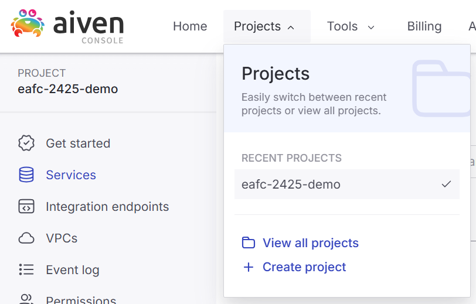
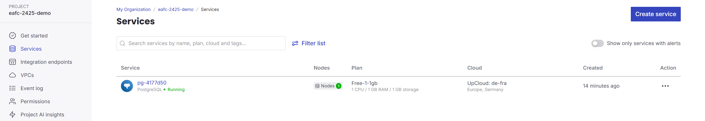
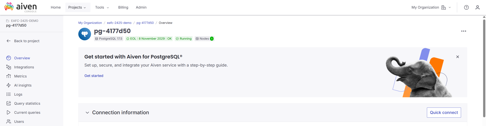
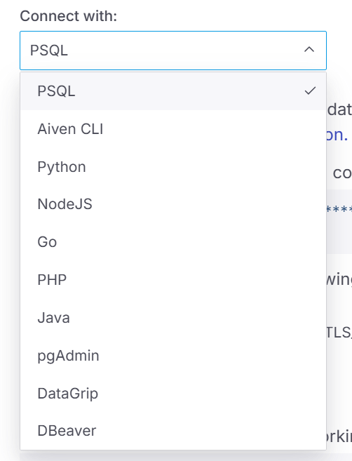
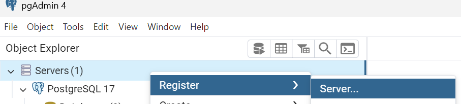
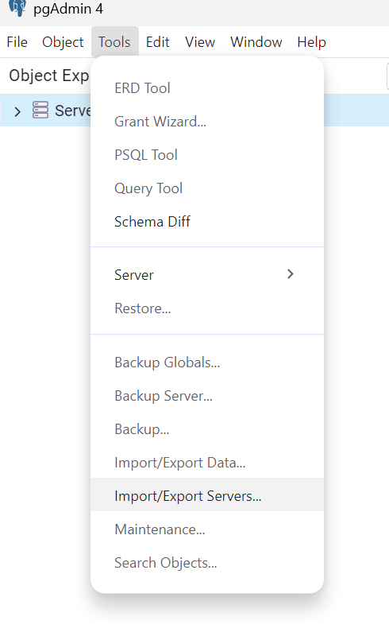
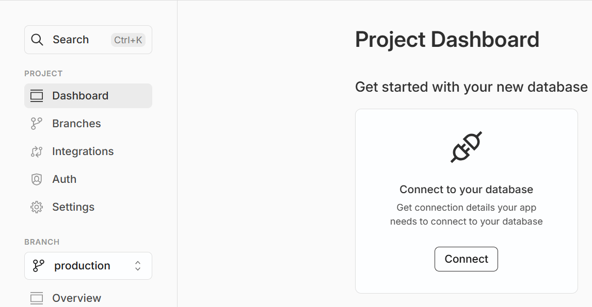
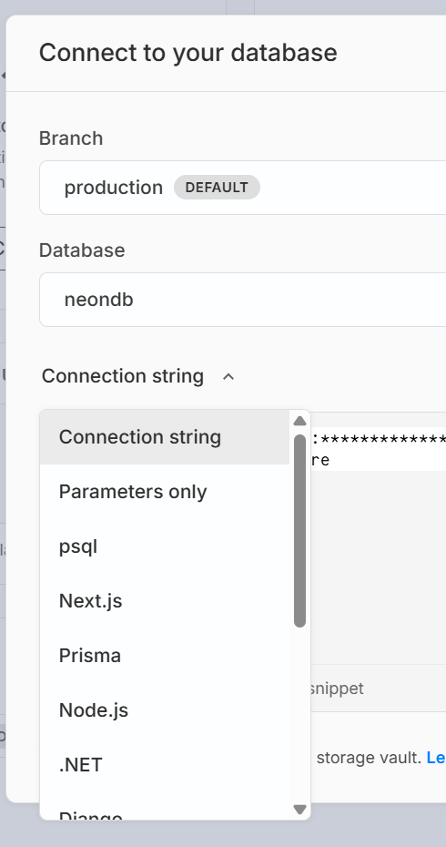
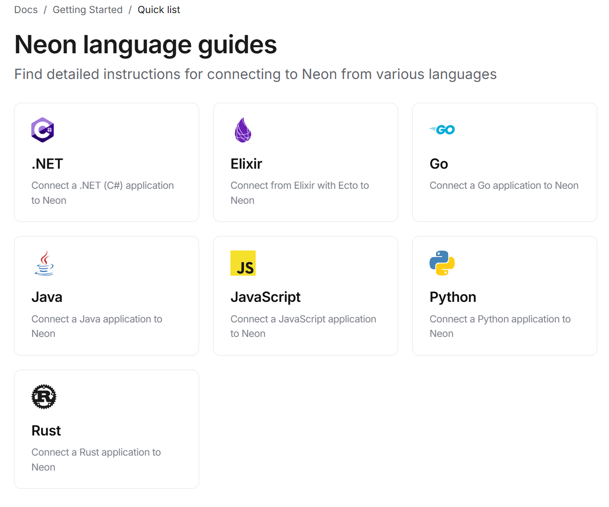
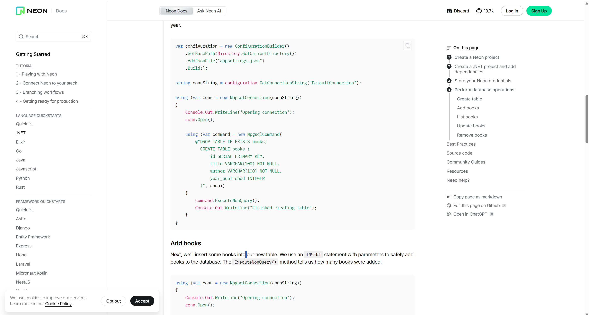

Mise en production
- Introduction
De tout les chapitres, celui-ci sera le moins pérenne.
Les services cités ici dépendant d'acteurs tiers qui pourraient ne plus offrir de "free tiers", évoluer de
telle manière à rendre obsolète les informations ci-présentes ou simplement disparaitre.
Prenez donc en considération que ce chapitre date de juin 2025
Introduction
Au long de vos études, vous avez créées une bonne quantité de base de données
Dans la plupart des cas, ceci a été réalisé dans un cadre purement pédagogique et, utiliser votre machine
personnelle pour gérer votre base de données était tout à fait acceptable.
Néanmoins, dans vos projets "réels", vous devrez aussi penser à la meilleure manière de mettre votre base de
données à disposition, au moyen de la rendre opérationnelle dans un environnement de production et
plus juste de
développement
Nous allons voir ci-dessous quelques éléments nécessaires à la compréhension de ce processus
aiven
Aiven est un manager de solution cloud vous permettant de gérer vos déployement sur diverses plateformes
comme AWS ou Azure
Il agit comme un acteur supplémentaire entre vous et ces plateformes pour faciliter la mise en production de
vos projets.
En ce qui concerne les bases de données, Aiven a l'avantage de proposer un tiers gratuit utilisant Digital
Ocean et vous permettant de mettre en ligne un projet pgsql
Ce tiers gratuit est particulièrement intéressant car ne demande pas de lier un compte bancaire et n'est pas
limité dans le temps (bien que limité dans ses capacités, évidement)
Commencez par vous créer un compte et vous connecter
Une fois connecté, vous devriez être redirigés vers la section "ajout de service" de la platefore dans
laquelle vous
pouvez créer un projet pgsql
Faites bien attention à choisir le plan convenant à vos besoin, l'emplacement du serveur ainsi que la
version de postgre utilisé (dans le cadre de ce cours, la 17)
Une fois ceci réalisé, dirigez vous vers l'onglet "Projects" pour ouvrir la page de gestion de votre base de
données.

Là, vous devriez voir la liste de vos services courants sous la forme d'un tableau

Sélectionnez votre projet et consulter vos informations de connection (voir capture d'écran en bas à droite)

Un pop up apparait avec vos informations de connection
Notez que, si les informations fondamentales sont les même peu importe votre GUI utilisé par gérer votre
base
de données, il vous est tout de même possible de spécifier un format précis dans un menu déroulant en haut à
droite de la pop up

Le reste se passe sur votre machine
Ouvrez votre programme de gestion de base de données
Si vous utilisez pgadmin, plusieurs options s'offrent à vous pour vous connecter à votre serveur de base de
données.
Soit en encodant manuellement toutes les informations :

Soit en récupérant le fichier json disponible dans la pop up cité précédement et l'ajouter via l'outils d'import de serveur

Voilà, votre base de données est prête à être utilisée
À partir d'ici, si ce n'est la connection à votre base de données, rien ne change dans l'utilisation que
vous allez en faire (comparé à ce que vous aurez fait dans le reste de vos cours)
Mais prenez bien conscience du fait que les bases de données créées sont "en ligne"
Par exemple, vous n'avez pas de données en local sur votre machine.
Vous pourriez aussi utiliser cette base de données depuis n'importe quel poste ayant un accès internet.
Via votre GUI de gestion de base de données... Ou tout autre programme dans lequelle vous configureriez une
connection à cette base de données.
Un monde sans limite s'offre à vous ! (Si ce n'est la limite d'1GB de stockage)
Neon
Ne pensez pas être limité à Aiven car il apparait en premier sur cette page.
De nombreux autres alternatives sont disponibles. Par exemple, Neon
Là ou Aiven était un peu plus généraliste, Neon, lui, se
défini comme spécialisé pour les bases de données postgre
Son tiers gratuit est aussi disponible sans informations de carte de crédit et permet d'hoster sa base de
données sur via Azure ou AWS
Et son utilisation est aussi simple que celle d'Aiven pour commencer vos tests
Commencez par créer un compte et, lors de votre première connection, il vous est demandé de créer votre base
de données.
Une fois ceci fait, vous devriez arriver sur votre dashboard.
À partir de là, c'est pareil !
Récupérez vos informations de connection et entrer les dans votre programme habituel

De la même manière, plusieurs options sont proposées pour récupérer vos informations

Une chose intéressante concernant Neon est qu'il propose des tutoriels pour vous guider pas à pas dans le processus de connection et d'utilisation de votre base de données depuis une multitude de langage / framewarok


AWS et Azure
Les services d'AWS et Azure ont été cités plus haut
S'il est possible aussi d'utiliser ces services en "free tiers", ceux-ci requièrent par contre, dans
beaucoup de cas, de lier ses informations bancaires de telle manière à pouvoir passer à un produit payant
quand ceci devient nécessaire après une certaine consommation ou après un temps limité d'accès gratuit
Il s'agit d'acteurs très important avec lesquelles vous serez sans doute amenés à travailler.
S'il est pertinent de vous former à l'utilisation de ces outils le moment venu, ceci dépasse par contre le
thème de notre cours.
Notez néanmoins qu'Azure dispose d'une option "azure for student" vous permettant d'exploiter la plateforme
pour vos études si vous êtes éligibles
De la même manière, AWS dispose du programme "AWS Educate"
Self-hosting
Les quelques solutions discutées plus haut permettent de déléguer une partie du travail à des plateformes
externes.
Il s'agit de services de base de données "managées" qui permettent d'alléger votre charge de travail
Comparez donc :
Sur Neon et Aiven, vous n'avez eu qu'à créer un compte et, en quelques clics, votre base de données était
prête à l'emploi
Sur votre machine, vous avez d'abord du installer le SGDB à la main et, si l'on souhaite pousser le vice un
peu plus loin, vous avez certainement installé votre OS ainsi que d'autres outils
Il vous serait tout à fait possible de faire pareil pour hoster votre base de données
Vous pourriez installer une machine et tout le nécessaire pour faire tenir une base de données dessus
Vous pourriez ensuite la mettre en réseau et l'utiliser ainsi.
Ceci dispose de plusieurs avantages. Entre autre en terme de coûts et de liberté d'action (pour le meilleur
et pour le pire)
Par contre, ceci vous demandera beaucoup plus de travail. Que ce soit pour l'installation, mais aussi la
mise à disposition, maintenance, gestion des back ups, de la sécurité,...
C'est maintenant qu'entre en jeu les compétences acquises lors de votre cours de réseau